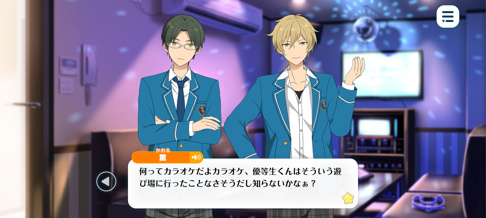
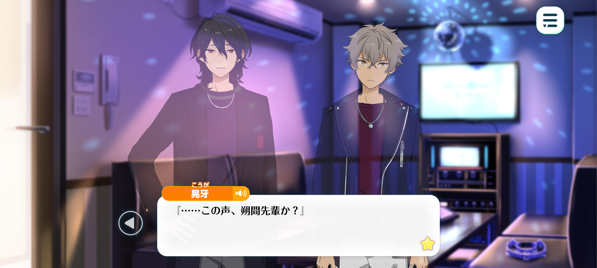

BIOHAZARD — Chapter 8


Time: A few minutes later
Location: In a private karaoke room in the back of the livehouse

Keito: What is this place?
Kaoru: What do you mean, what? It's karaoke, karaoke! I guess you wouldn't know, Mr. Model Student. You don't look like the type who's ever been to a place where people go to have fun~.
Keito: I know what karaoke is. I'm asking why there's a room like this at the back of a livehouse.
Kaoru: Things have been pretty tough for us, so I thought I'd try expanding the business a little. We've even got soundproofed practice rooms with proper equipment and everything, but they never really caught on.
Koga: Hmph. The Yumenosaki lot should've been your best customers, but not a single one of those guys has any interest in makin’ music.
Kaoru: Yeah. So I tried making those practice rooms more like karaoke rooms, to make them feel more welcoming to the general public. It's a new service we're offering here.
Koga: (Ah~, so that’s what it was like.)
Kaoru: (I really was doing my best to keep the business afloat, wasn't I? I was racking my brains and coming up with all sorts of ideas, trying so hard~...)
(In the end, this place became something of a refuge for students who didn't feel they had a place at Yumenosaki. Those kids would come and use the practice rooms just as they were meant to be used.)
(We went to all the trouble of renovating this karaoke room, but hardly anyone used it, so we ended up changing it back to how it was before. We were running short on practice rooms, after all.)
(Ahh, this is super nostalgic… I was really giving it my all back then.)
Koga: (Shoulda put the same effort into ya idol activities ‘n school work. Barely saw you around school back then, ya know?)
Kaoru: (Well, I wasn't the least bit interested in any of that back then ♪)
Oh~? That’s weird…
Keito: What’s wrong? Did you see something suspicious?
Kaoru: No, more of the opposite. Sakuma-san was supposed to be waiting for us here, but I can't see him anywhere.
Keito: …Sakuma-san? What could he possibly want with me now?
Koga: Wait, Sakuma-senpai’s comin’ here?! Woohoo! I’ve been waiting for this! ☆
Koga: (...I acted like such a fanboy back then, it’s embarrassing.)
Kaoru: (You're still embarrassing sometimes, you know~?)
Rei: Yo~.
Sorry for keepin’ ya. My bad, my bad… Coupla scary people caught me~. Hadta to explain some stuff to them which took a while.
God, bein’ popular’s a pain.
Keito: …
Rei: Oh, you actually came, bouzu. Such a conscientious little guy.
Keito: You were the one who called me here.
Rei: Right, ‘course. But you've got some real nerve, showin’ your face in front of me so brazenly.
Ain’t you embarrassed? I beat you up so badly the other day you couldn’t even get back up again ♪
Keito: …

Rei: (Uwaa…. Noooooo~, my past self is so embarrassing~...)
(Why was I acting like that? I should have had more tact!)
Koga: (...Is that you, Sakuma-senpai?)
Kaoru: (Ah, so we’re all here now.)
Rei: (Indeed… From the looks of things, you seem to have grasped our situation. We appear to be observing our past selves from some sort of ghostly state.)
(This is nothing short of torture... To be subjected to this infernal ordeal of having my own embarrassing past self paraded before my eyes for what feels like an eternity! What have I done to deserve such torment...?)
Koga: (Hn, you’re just reapin’ what you sowed. I live my life stayin’ true t’what I believe, so there’ll be nothin’ I’d be embarrassed by people seein’ here.)
Gyaaa! Sakuma-senpai! Gyaaaa! I-i-i-it’s a privilege to be able to meet you like this again![1]
Rei: (...)
(Goodness, Koga... What an admirable display of mental fortitude! Are you truly telling me that seeing such a thing doesn't embarrass you in the slightest?)
Koga: (I apologise. I am very embarrassed.)[2]
Kaoru: (Uwa, Hearing Koga-kun use keigo is such a treat. I'm not quite as bad as you two, but having my immature past self shoved in my face like this is pretty unpleasant, isn't it?)
(But seriously, how did things end up like this? I guess it's probably because of the AIIE experiment.)
Rei: (Indeed... Thought I'm afraid I can offer no further conjecture at present.)
(Perhaps, since our brains are all connected to the same apparatus, the dreams we're each experiencing are beginning to intermingle.)
Koga: (Do you really think so? Aren't dreams supposed to be, y'know, something individual?)
Rei: (Who can say? This technology is uncharted territory, after all.)
Kaoru: (I feel like I’m gonna regret taking part in such a questionable experiment.)
Rei: (There's little to be gained from dwelling on regrets now. We cannot turn back the hands of time, after all. For the moment, we should focus on adapting to our circumstances and finding a way forward as swiftly as we can.)
- he speaks formally here
- and again here!